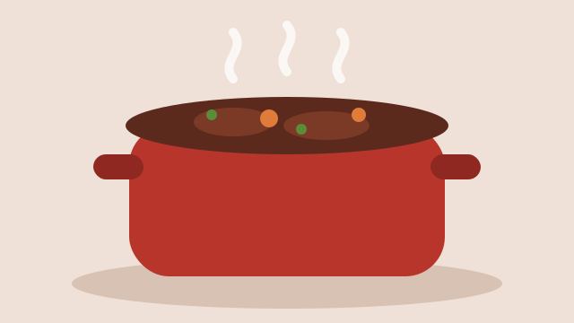

Braised Short Ribs with Red Wine
Ingredients
- Braise
- 5 lb bone-in beef short ribs
- 2 tsp kosher salt
- 2 tbsp neutral oil
- 1 onion, diced
- 2 carrots, diced
- 3 tbsp tomato paste
- 750 ml dry red wine
- 2 cups beef stock
- 4 sprigs thyme
- 2 bay leaves
- To finish
- 2 tbsp chopped parsley
Method
- Salt the ribs and let sit 30 minutes. Heat oven to 325°F.
- Brown ribs well on all sides in a Dutch oven; set aside.
- Cook onion and carrots until soft, add tomato paste and cook until brick red.
- Add wine and reduce by half, then add stock, thyme, bay and the ribs.
- Cover and braise 2 1/2–3 hours until tender.
- Chill overnight, lift off the fat, reduce the sauce and reheat. Finish with parsley.
Notes
Sample recipe — edit or delete anytime. Better made a day ahead.
Sample recipe — edit or delete anytime. Better made a day ahead.